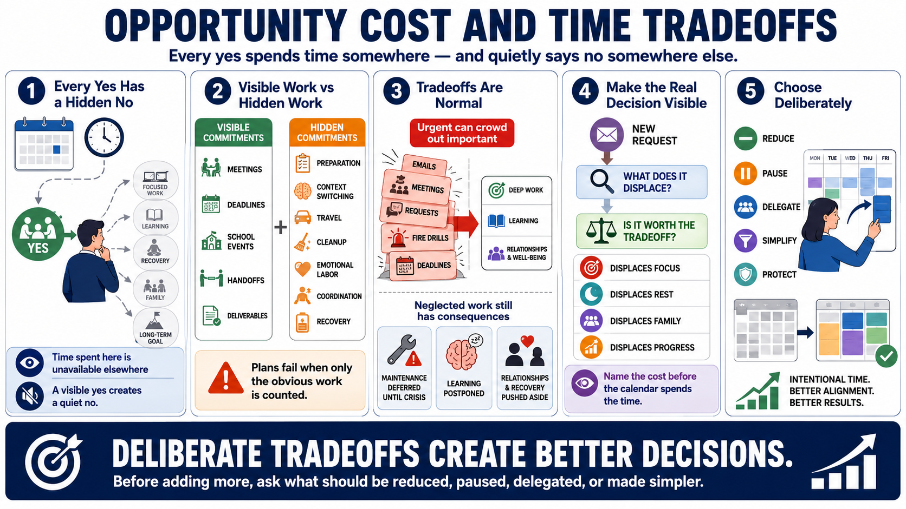

Opportunity Cost and Tradeoffs
Connecting to LMS... Progress: in progress

Narration
Opportunity cost is the value of what is not done when time is spent somewhere else. It is easy to see the meeting, task, favor, or request that receives a yes. It is harder to see the quiet no that happens at the same time. Saying yes to a low-value commitment may mean saying no to focused work, maintenance, learning, recovery, family time, or a long-term goal that never becomes urgent.
Some commitments are visible: meetings on the calendar, project deadlines, school events, operational handoffs, and promised deliverables. Others are hidden: preparation, context switching, travel, cleanup, emotional labor, coordination, and the recovery needed after intense work. Hidden commitments are where fantasy planning takes root. A plan looks reasonable because only the obvious work was counted.
Tradeoffs are not failures. They are the normal shape of limited capacity. The problem comes when tradeoffs are accidental. Urgent work can crowd out important work. Maintenance can be deferred until it becomes a crisis. Learning can be postponed because no one is asking for it today. Relationships and recovery can be treated as flexible, even though neglecting them has real consequences.
Deliberate choice means naming the cost before the calendar spends the time automatically. Before accepting a request, ask what it displaces. Before committing to a goal, ask what support and protection it needs. Before adding more, ask what should be reduced, paused, delegated, or made simpler. Opportunity cost does not make choices easy, but it makes the real decision visible.